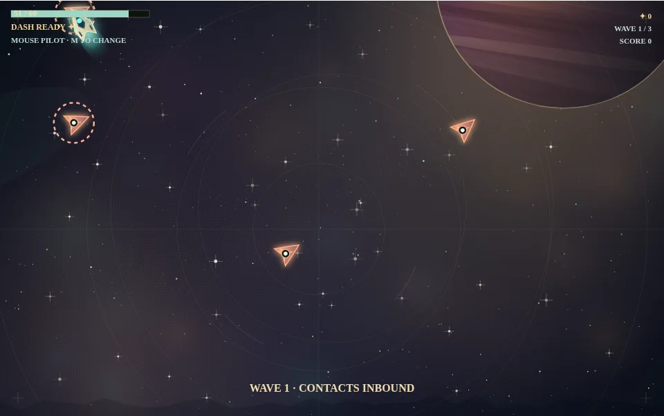
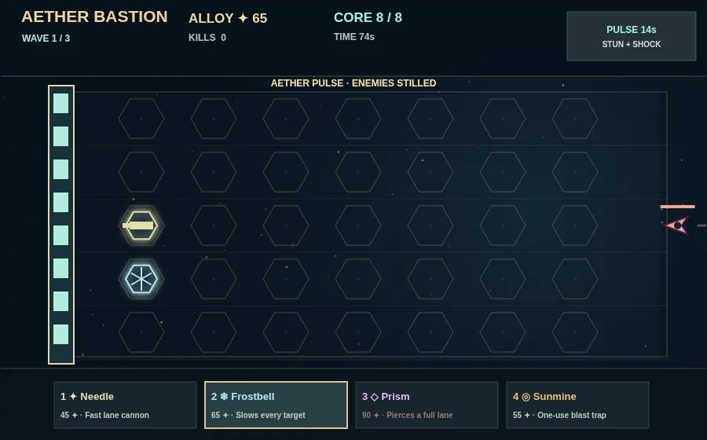
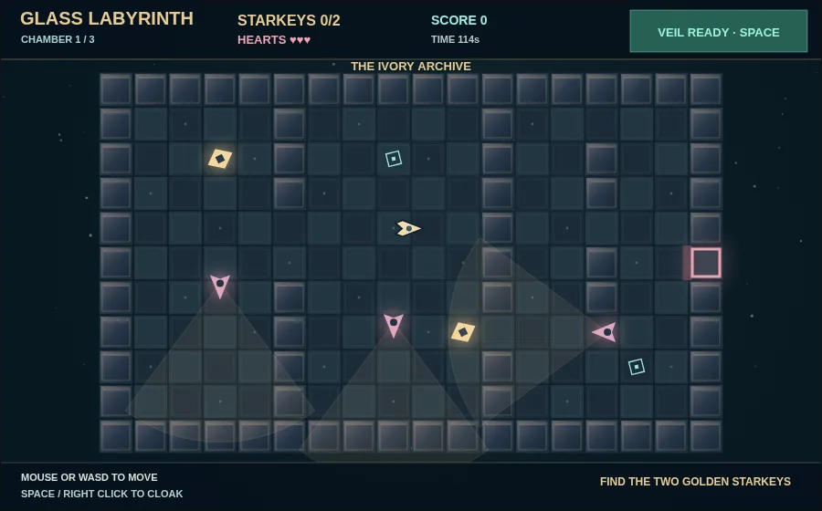

01 · ACTION
Dance between stars.
Mouse-piloted combat. Read hostile telegraphs, chain kills into FLOW, and dodge sector hazards in a clean score-attack cartridge.
THE GRAND TOUR · THE CARTOGRAPHER'S EDITION
A twelve-leg voyage through impossible skies, strange machinery, and the distant edge of everything.
Pilot a hand-built starship. Fight creatures made of light. Outsmart watchers in the ruins of old observatories. Forge ridiculous machines to hold the last star. Every decision bends the next journey.
PLAY IN YOUR BROWSER · NO INSTALLER · LOCAL SAVE · KEYBOARD AND MOUSE

NOT ONE KIND OF GAME
Each encounter is a game in its own right, with its own mastery curve. These images are captured from the playable build, not concept illustrations.
Mouse-piloted combat. Read hostile telegraphs, chain kills into FLOW, and dodge sector hazards in a clean score-attack cartridge.

Aether Bastion is a three-wave siege. Build, specialize, sell, and hold the core against the crystal titan.

Three chambers of shifting patrols. Read visible sentry cones, cloak through fields, collect starkeys, and reach the sealed archive.
THE SHAPE OF A JOURNEY
One run takes you from Mercury's warm light to Neptune's dead-cold relay. Between hunts you'll find puzzles, instruments, a chandlery, strange bargains and sanctuaries. A dead ship resets the expedition; your records, unlocked hulls and the stories you've gathered carry forward.
Designed as an exploratory browser game, with no account or telemetry. Your progress stays on your device.
THE OBSERVATORY IS WAITING